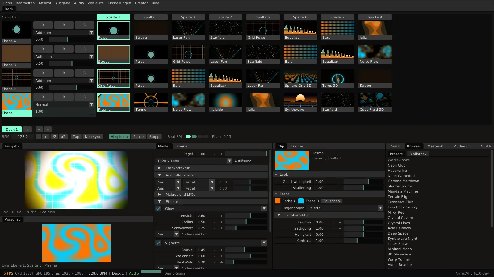

Inhalt
Erste Schritte
- Willkommen bei NyrexVJ
- Installation und erster Start
- Das Fenster im Überblick
- Deine erste Show in fünf Minuten
Visuals spielen
- Das Clip-Raster
- Decks und Übergänge
- Layer und Mischmodi
- Das Clip-Fenster
- Effekte
- Die Bibliothek
- Presets und Sitzungen
- Das Master-Fenster
Musik und Bewegung
Eigene Inhalte
- Video- und Bild-Clips
- Deine eigenen Shader
- 3D-Modelle
- Der Clip Creator
- Text, Partikel und Effektketten
- Der Node-Effekt-Editor
- Live-Quellen: Spout, NDI und Kameras
Ausgabe und Aufnahme
Live-Steuerung und Shows
- Steuerung: MIDI, OSC und die Webseite
- Show-Sync und Timecode
- Die Show-Zeitleiste
- Bühne: DMX, VRSL und VRChat
- Plugins
Nachschlagen und Hilfe
Handbuch / Erste Schritte
Das Fenster im Überblick
#Die Menüleiste
Dieses Kapitel benennt jeden Teil des Hauptfensters, damit sich der Rest des Handbuchs darauf beziehen kann. Die Menüleiste oben hat diese Menüs:
| Menü | Was drin ist |
|---|---|
| Datei | Neue leere Komposition, Als Preset speichern, Datenordner öffnen, Beenden |
| Bearbeiten | Rückgängig und Wiederherstellen |
| Ansicht | Arbeitsbereiche, Fensteranordnung zurücksetzen, Oberflächengröße, Hoher Kontrast, Tastaturbedienung, Statusleiste zeigen |
| Ausgabe | Ausgabefenster öffnen oder schließen, Vollbild, Ausgänge und Mapping, Aufnahme starten oder beenden, Aufnahme-Einstellungen, Per Spout an OBS senden, Über NDI senden, Video-Routing |
| Audio | Audioquelle wählen: Aus, Demo-Signal, Systemaudio, Eingang, und Geräte aktualisieren |
| Zeitleiste | Zeitleiste ausführen, Fenster der Show-Zeitleiste anzeigen, Abspielen, Pause, Stopp, Handeingriffe freigeben |
| Einstellungen | Öffnet das Einstellungsfenster |
| Creator | Clip Creator öffnen, Neue 3D-Szene, Vorlagen, der Node-Effekt-Editor, Text und Partikel, Effektketten, Shader-Editor |
| Hilfe | Handbuch, Was ist neu, Links, Sprache, Nach Updates suchen |


#Das Deck-Fenster
Das große Fenster oben ist das Deck-Fenster. Es enthält das Clip-Raster mit 8 Spalten und 4 Layern, die 16 Deck-Knöpfe, die Tempo-Regler und die Übergangs-Einstellungen. Alles, was du live spielst, beginnt hier. Siehe Das Clip-Raster und Decks und Übergänge.
#Vorschau und Ausgabe
Unter dem Deck-Fenster findest du links zwei Fenster mit einem Bild. Das Fenster Ausgabe zeigt das fertige Bild genau so, wie es NyrexVJ verlässt, mit Größe, Bildrate und Tempo. Das Fenster Vorschau zeigt eine Zelle, die du dir nur angesehen hast: Strg+Klick auf eine Zelle zeigt sie dort, ohne sie abzuspielen, und Jetzt abspielen spielt sie ab. So bereitest du den nächsten Clip vor, während das Publikum etwas anderes sieht.
#Layer, Clip und Master
Neben den Bildern liegen drei Fenster, die zusammengehören. Das Layer-Fenster (in der Oberfläche heißt es Ebene) enthält Deckkraft, Mischmodus, die Audio-Reaktionen und die vier Effekt-Slots des gewählten Layers. Das Clip-Fenster zeigt den Clip der gewählten Zelle und seine Regler. Das Master-Fenster wirkt auf das fertige Bild: Pegel, Blackout, Auflösung, Farbkorrektur, Makros, LFOs und vier Master-Effekte. Sie sind in Layer und Mischmodi, Das Clip-Fenster und Das Master-Fenster beschrieben.
#Der Browser
Der Browser rechts hat drei Tabs. Presets enthält die Werks-Looks und deine eigenen Looks, Bibliothek enthält alle Clips, Effekte und Dateien, die du nutzen kannst, und Audio enthält die Audioquelle, das Live-Spektrum und die Beat-Erkennung. Siehe Presets und Sitzungen, Die Bibliothek und Audio und Musik.
#Die Statusleiste
Die Leiste unten zeigt die Bildrate, die Prozessor- und Grafikzeit, die Ausgabegröße, das Tempo, das aktuelle Deck und den Zustand des Audios. Während einer Aufnahme zeigt sie außerdem REC mit der Zeit und den verworfenen Bildern. Du kannst sie unter Einstellungen, Aussehen ausblenden.
#Fenster verschieben
Alle Fenster lassen sich am Titel ziehen, nebeneinander andocken, als Tabs stapeln oder frei schwebend herausziehen. NyrexVJ merkt sich die Anordnung. Benannte Anordnungen kannst du als Arbeitsbereiche behalten und im Menü Ansicht wechseln. Wenn du ein Fenster verlierst oder die Anordnung durcheinander ist, nutze Ansicht, Fensteranordnung zurücksetzen. Die Größe der ganzen Oberfläche, ihr Kontrast und ihre Farben stehen unter Einstellungen, Aussehen; alles ist erklärt unter Oberfläche, Arbeitsbereiche und Barrierefreiheit.
Fehler gefunden oder etwas vergessen? Sag es uns auf GitHub. Dasselbe Handbuch steckt im Programm, du hast es also auch ohne Internet. Öffne es mit F1 oder über das Menü Hilfe, Handbuch.